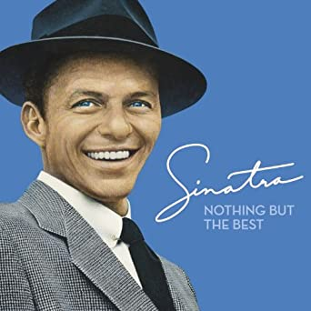
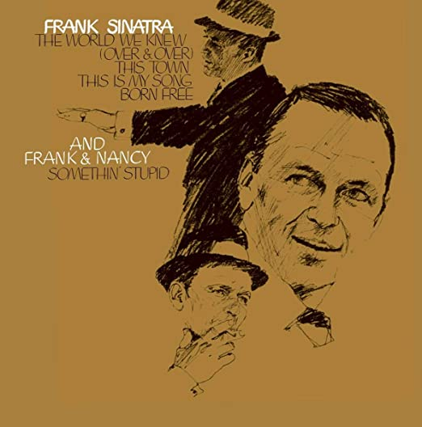
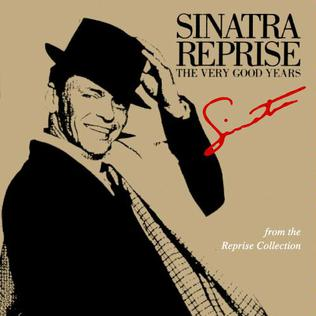

Biografía: |
Francis Albert Sinatra (Hoboken, Nueva Jersey; 12 de diciembre de 1915-Los Ángeles, California; 14 de mayo de 1998), conocido popularmente como Frank Sinatra, fue un cantante y actor estad ounidense. Dejó, a través de sus discos y actuaciones en directo, un legado canónico en lo que respect a a la interpretación vocal masculina de la música. Sus grabaciones alcanzaron las listas musicales 2 09 veces. Es uno de los 33 artistas que ostenta tres estrellas en el Paseo de la Fama de Hollywood. |
Géneros Musciales: |
Canción más Escuchada: |
Discografía: |
 |
Nothing But the Best |
Remasterizado en 2008 |
+600 mil copias |
 |
The World We Knew |
1967 |
copias desconocidas |
 |
The Very Good Years |
1991 |
copias desconocidas |
Entre Otros... |
Cónoce más sobre Frank Sinatra: |
|
|
|
|
|
|